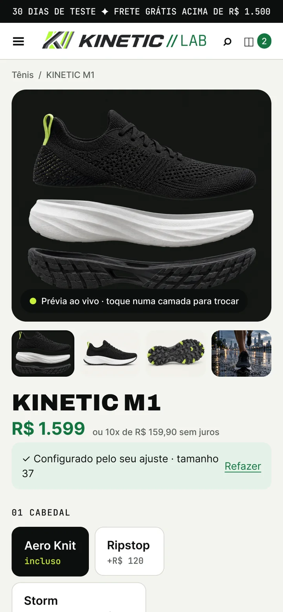
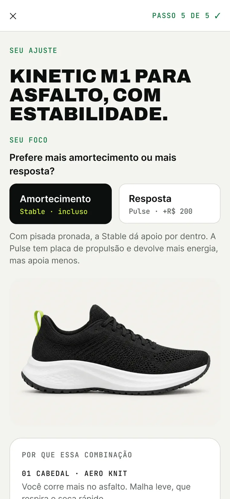
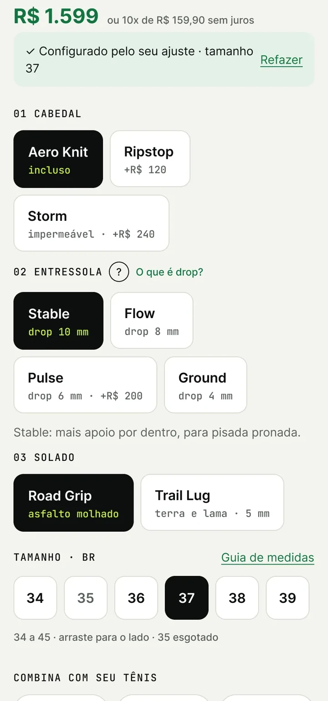
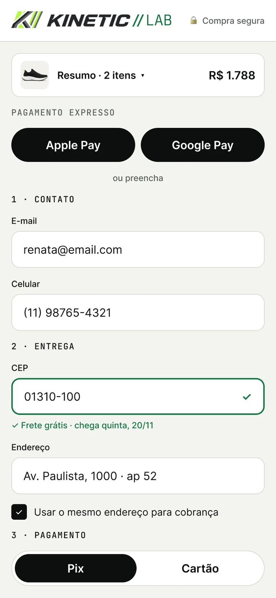
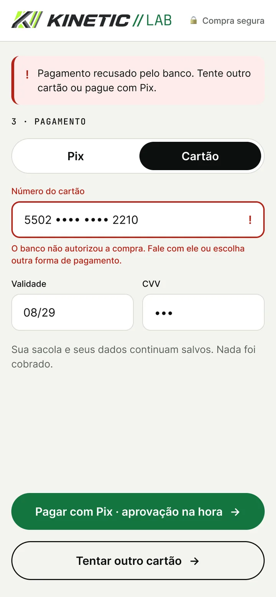
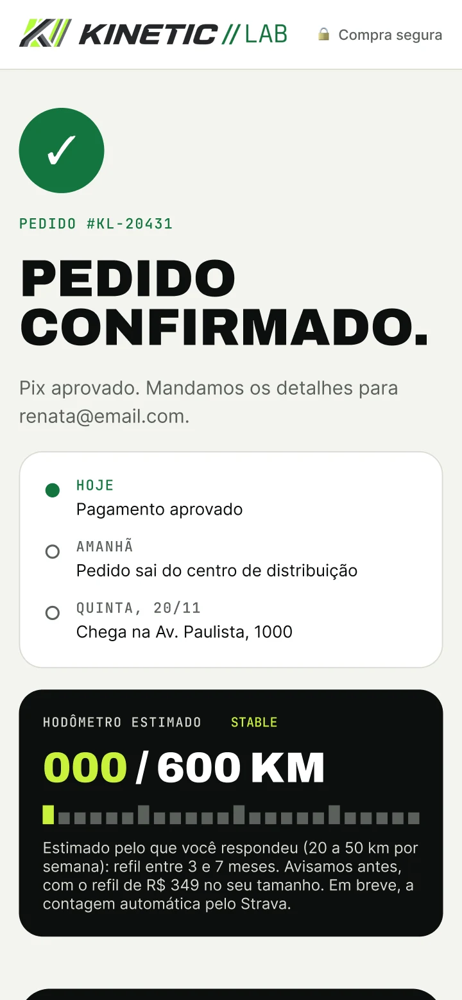
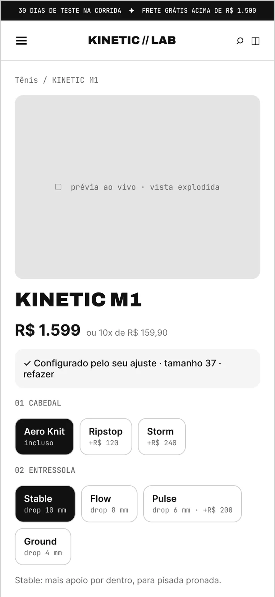
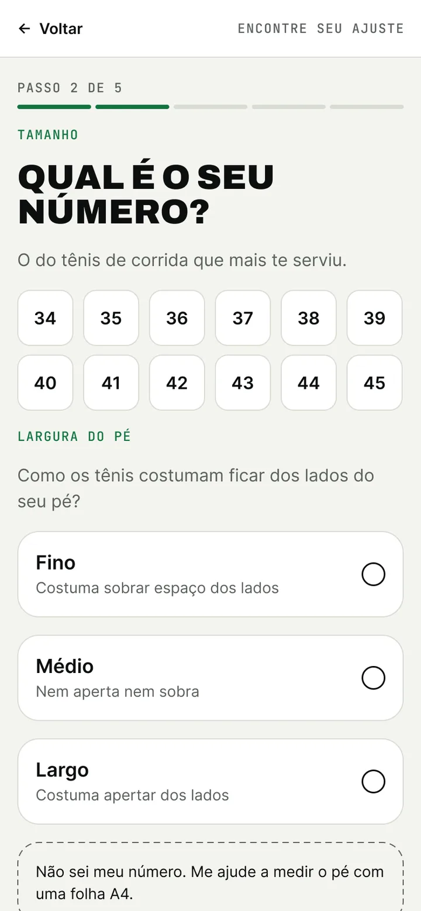
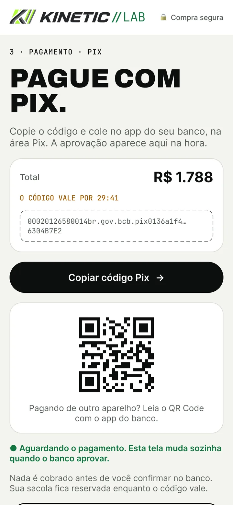

KINETIC // LAB
Um tênis de corrida com cabedal, entressola e solado trocáveis. O desafio do brief era vender um produto de R$ 1.599 para quem tem medo de errar o tamanho.
- Tipo
- Desafio de curso, com brief fechado e 2 dias de prazo
- Meu papel
- Leitura do brief, escopo, fluxos, decisões de produto, roteiro de teste e revisão de cada tela
- Ferramentas
- Figma. O Claude gerou a pesquisa simulada, os textos e as telas a partir das minhas decisões; Figma AI e Gemini, as fotos e a logo
- Entrega
- 10 telas mobile, 3 desktop, design system, protótipo com as 3 tarefas e uma avaliação simulada



Resumo em 30 segundos
Li o brief e corrigi cinco pontos dele. Defini o escopo e as tarefas do teste e revisei cada tela contra o roteiro.
Troquei o "Biometric Fit" por um questionário de cinco perguntas que recomenda tênis e tamanho. A página do produto já abre configurada.
Achei e corrigi duas tarefas impossíveis antes de avaliar. Na avaliação simulada com 5 perfis, a recomendação respondeu 37 para todo mundo.
Fazer a recomendação ler as respostas e testar com pessoas reais. A pesquisa e a avaliação deste projeto são simuladas.
O que eu mudei no brief
O enunciado chegou pronto, com nome de funcionalidade, números e uma conta de economia. Li tudo antes de desenhar e mudei cinco pontos.
| No brief | No projeto |
|---|---|
| "Biometric Fit & Stride Matcher" | "Encontre seu ajuste", um questionário. Não existe biometria no produto, então o nome prometia algo que a tela não entrega. |
| "1 base + 3 refis = 1.800 km, 40% de economia" | A conta não fechava. Refiz com 2 refis: R$ 1.599 + 2 × R$ 349 = R$ 2.297 em 1.800 km, contra 3 pares de R$ 1.299. Dá 41%. |
| Configurador 3D no celular | Vista explodida com as três peças separadas. O 3D completo ficou para uma versão futura. |
| Texto em português de Portugal | Interface em português do Brasil. |
| 68% de abandono e 1,8% de conversão | Aparecem sempre como dado do brief ou como meta, nunca como resultado meu. |
Pesquisa simulada
Com 2 dias de prazo, não entrevistei corredores. Montei a descoberta a partir do brief e marquei como simulada em todo o material. As duas personas abaixo são fictícias.
Maratonista em São Paulo, 50 km por semana, pisada pronada. Já devolveu um tênis por causa do tamanho.
- Não sabe se precisa de placa de carbono
- Odeia formulário longo no celular
- Paga caro desde que tenha certeza
Corre 70 km por semana em Florianópolis, entre asfalto e trilha. Tem três pares para dar conta dos terrenos.
- A sola de trilha gasta no asfalto
- Chuva vira problema no fim de semana
- Compara ficha técnica antes de comprar
As duas travam na mesma pergunta: qual peça e qual tamanho, sem poder experimentar antes.
Decisões de produto
Cada decisão responde a uma pergunta que a pessoa faz antes de comprar.
"Qual tamanho eu peço?"
São cinco perguntas curtas: pisada, número e largura do pé, quilômetros por semana, terreno e faixa de peso. Quase todas têm a opção "Não sei". Quando a pergunta tem uma resposta só, tocar numa opção já leva à próxima. Na do tamanho, a pessoa marca o número e a largura e toca em Continuar.
A recomendação explica cada peça com o que a pessoa respondeu ("sua pisada é pronada e você prefere amortecimento"). No topo, ela escolhe o foco: amortecimento, com a Stable, ou resposta, com a Pulse, que custa R$ 200 a mais. O tamanho leva a largura em conta: quem tem pé largo sobe um número. Se ficar justo, a troca é grátis em 30 dias.
No protótipo, essa tela ainda é fixa e mostra as mesmas respostas para todo mundo. A avaliação simulada da seção 07 achou isso.

"O que muda se eu trocar a sola?"
O configurador tem três passos: cabedal, entressola e solado. A estrutura veio do "Monte a sua" da loja lumiê, uma das referências: prévia ao vivo, passos numerados e total fixo embaixo.
Cada opção mostra o dado técnico com unidade e a diferença de preço. Na revisão do wireframe precisei perguntar o que era "drop", então a entressola ganhou um "O que é drop?" ao lado do título.

"Por que pagar R$ 1.599 num tênis?"
A espuma da entressola cansa antes do resto do tênis. Na KINETIC, a pessoa troca só ela, por R$ 349, a cada 600 km. A conta aparece na Home e na página do produto, em barras e em reais por quilômetro.
| Em 1.800 km | Total | Por km |
|---|---|---|
| KINETIC M1 + 2 refis 41% a menos | R$ 2.297 | R$ 1,28 |
| 3 pares comuns de R$ 1.299 | R$ 3.897 | R$ 2,17 |
Premissas da conta: o par comparado custa R$ 1.299, cabedal e solado duram os 1.800 km sem troca, e o frete dos refis não entra. Com uma troca de solado (R$ 279), a economia cai para cerca de 34%. Contra um par de R$ 899, cai para cerca de 15%. Os preços foram definidos para o projeto, dentro da faixa que o brief indica.
"Quanto vou pagar no total?"
O frete aparece pelo CEP já na página do produto e se repete na sacola e no checkout. O botão diz o valor e a forma de pagamento: "Pagar R$ 1.788 com Pix".
No Pix, o botão principal copia o código. Quem compra pelo celular não consegue ler o QR Code na própria tela, então o QR fica embaixo, para quem paga de outro aparelho.
Quando o pagamento é recusado, a tela diz que nada foi cobrado, que a sacola continua salva e oferece o Pix como saída.


"E quando a espuma acabar?"
O pedido confirmado mostra um hodômetro estimado da entressola, calculado pelo volume que a pessoa informou no questionário. Com 50 km por semana, o refil vem em cerca de 3 meses. Contar sozinho, pelo Strava, ficou para a próxima versão.

A revisão antes do teste
Fiz duas revisões antes do teste. Na primeira, reli os wireframes com o brief e o roteiro do teste do lado, e duas tarefas eram impossíveis. Na segunda, já com as telas prontas, reli o brief item por item.

| No wireframe | Na tela final |
|---|---|
| A tarefa 2 pedia para adicionar uma palmilha que não aparecia em nenhuma tela | Bloco "Combina com seu tênis", com foto, logo depois do configurador |
| A tarefa pedia a sola de chuva, que já vinha marcada pela recomendação | Tarefa reescrita: trocar para a sola de trilha |
| O checkout escondia o frete no resumo recolhido | Frete e prazo no bloco de entrega e na barra fixa |
| Tamanhos de 35 a 40 | De 34 a 45, com rolagem; o esgotado continua na grade, em cinza |
| "drop 10", sem unidade | "drop 10 mm" e a ajuda "O que é drop?" |
A releitura do brief
Abri o PDF do brief e conferi cada pedido nas telas. Achei sete lacunas e corrigi as que não atrapalhavam o teste.


| O brief pedia | Como estava | Como ficou |
|---|---|---|
| Tamanho "com base na anatomia do pé" | Só o número, entre 36, 37 e 38 | Grade de 34 a 45 e a largura do pé |
| Perguntar o foco: amortecimento ou resposta | Não era perguntado | Escolha no topo da recomendação. Não virou o sexto passo porque a matriz CSD (certezas, suposições e dúvidas) supõe que mais de cinco passos fazem gente desistir |
| Recomendação baseada nas respostas | Citava "manhã cedo em São Paulo" e "50 km por semana", que ninguém tinha informado | Cada motivo cita uma resposta do questionário |
| "Pix com QR Code instantâneo" | O checkout prometia o QR, mas a tela não existia | Tela do Pix, com "Copiar código" em destaque |
| Frete "via detecção de localização ou CEP" | Só CEP | "Usar minha localização" ao lado do CEP |
| Tíquete maior com o segundo solado | Oferecido só no desktop | Fica para depois do teste: na página do produto, um card "Solado Trail Lug + Adicionar" competiria com a tarefa 2, que pede para trocar o solado |
Design system e identidade
Juntei três referências: a loja lumiê deu a estrutura e o configurador, o Sports News os títulos grandes em caixa alta, e a Sport Tênis a dupla preto e verde. Como a marca se chama LAB, o produto aparece como numa prancha técnica.

#0D0F0ETexto e botão principal#F3F4EFFundo da página#13753FPreço, link e sucesso#C8F23ADestaque, só no escuroO verde-limão tem contraste de 1,3:1 sobre o branco, então só aparece em fundo escuro. Na logo, o "// LAB" passa para o Verde Pista quando o fundo é claro.
Aa
Archivo Black nos títulos, Inter no texto e JetBrains Mono para os dados técnicos, como drop, km e R$ por km. A fonte mono entrou no lugar da serifa itálica da lumiê, que tinha cara de joalheria.
13 cores e 13 estilos de texto em variáveis. Os campos têm foco, erro e sucesso, e a mensagem de erro diz o que fazer ("CEP incompleto. Digite os 8 números"). O módulo esgotado continua visível, riscado. O foco é um anel duplo de 2 px, verde no claro e limão no escuro.
Desktop
Desenhei primeiro o celular. No desktop, os mesmos componentes ganham espaço: a explicação do drop já aparece aberta e a grade de tamanhos cabe inteira, sem rolagem.


Protótipo e avaliação simulada
O protótipo tem 21 telas e estados, com um estado para cada combinação de sola e palmilha, para a sacola sempre mostrar o que a pessoa escolheu. Estas são as 3 tarefas do roteiro de teste.
| Tarefa, como leio em voz alta | Conta como concluída quando |
|---|---|
| 1 · "Descubra qual tênis e qual tamanho a KINETIC recomenda para você." | A pessoa chega na recomendação |
| 2 · "No fim de semana você vai correr numa trilha. Troque a sola para a de trilha e adicione uma palmilha." | Trail Lug selecionado e palmilha na sacola |
| 3 · "Finalize a compra. Antes de pagar, confira o frete e a garantia." | Diz o valor do frete e "30 dias" |
Avaliação simulada com 5 perfis
Simulação feita com IA. Sem tempo para recrutar corredores, percorri o protótipo com ajuda de IA no papel de 5 compradores fictícios, cada um por um caminho diferente. As falas são simuladas. Nenhuma pessoa real usou o produto.
| Perfil fictício | Caminho no protótipo | O que aconteceu |
|---|---|---|
| Diego, 31 calça 42, pisada neutra, rua e trilha | Respondeu o questionário e seguiu até o Pix | Concluiu as 3 tarefas, mas leu "Você usa 37" e "pisada pronada". Confiança no tamanho: 1 de 5. "Marquei 42 e ele manda eu ficar no 37?" |
| Lúcia, 47 não sabe a pisada nem o número | "Não sei" na pisada e "me ajude a medir o pé" | As 2 perguntas prometidas no "Não sei" não aparecem, e a medição com folha A4 não tem tela. "Que perguntas?" |
| Marcos, 44 maratonista, compara preço | Trocou a sola e adicionou a palmilha | A barra continuou em "Configuração base · R$ 1.599"; só a sacola mostrou R$ 1.788. "Entrou ou não?" |
| Bia, 27 paga no cartão | Tocou na aba "Cartão" | Viu "pagamento recusado" sem digitar nada e terminou pelo Pix. "Eu nem digitei o cartão." |
| Seu Paulo, 58 paga no Pix, lê devagar | "Pagar com Pix" e "Copiar código Pix" | O pedido apareceu confirmado sem ele passar pelo banco. "Copiei e já está pago?" |
Os 5 perfis concluíram as 3 tarefas, e frete, prazo e garantia de 30 dias apareceram antes do botão de pagar. A hipótese principal não se sustentou: a recomendação é uma tela fixa e responde 37 e pisada pronada para todo mundo, e essa é justamente a dúvida que o produto promete resolver.
O que vai mudar
- AltaA recomendação vai ler as respostas
O número e a largura do passo 2 viram variáveis do Figma, e a recomendação, a página do produto e a sacola leem essas variáveis. Pisada e terreno ganham 3 variantes da tela.
- AltaO "Não sei" vai cumprir o que promete
Duas perguntas curtas depois do "Não sei" da pisada, textos próprios nos passos 3 e 4 e a tela de medição com a folha A4.
- MédiaO pagamento vai esperar a pessoa
A aba "Cartão" abre o formulário, e a recusa só aparece depois de "Pagar". O Pix mostra "Código copiado" e "Aguardando o banco" antes da confirmação.
- MédiaO total vai somar o que foi escolhido
A barra da página do produto passa a somar a palmilha e a dizer a configuração escolhida.
Mudanças planejadas, ainda não feitas. Perfis, resultados e os 7 achados estão na página 10 do Figma; as mudanças, na página 11.
Como trabalhei com a IA
A IA gerou a pesquisa simulada, os textos, as telas, as fotos e a logo. As decisões e a revisão foram minhas.
- EuLi o brief, decidi as cinco mudanças, o que entrava no MVP, os preços, as três referências visuais e as tarefas do teste.
- Claude, Figma AI e GeminiO Claude montou a pesquisa simulada, os textos e as páginas no Figma seguindo essas decisões. Figma AI e Gemini geraram as fotos do tênis fictício e a logo.
- EuRevisei página por página. A dúvida do "drop", as duas tarefas impossíveis e a recomendação que inventava "manhã cedo em São Paulo" apareceram nessa revisão.
- EuDecidi pôr o foco no topo da recomendação, e não num sexto passo, e deixar o segundo solado no celular para depois do teste, para não atrapalhar a tarefa 2.
Como saber se funcionou
Um teste com pessoas mostra onde alguém trava, mas não mede as metas do brief. Para isso, o site precisa registrar alguns eventos, e cada meta precisa de uma conta e de um número que não pode piorar.
| Meta do brief | Como calcular | O que não pode piorar |
|---|---|---|
| Conversão de 1,8% para 3,2% | Pedidos pagos ÷ sessões | Pagamentos recusados e Pix expirados |
| Devolução por tamanho de 22% para menos de 6% | Devoluções por tamanho ou largura ÷ pares entregues, em 30 dias, separando quem seguiu o tamanho recomendado de quem mudou | Custo de devolver tênis já usado |
| Configurador usado por mais de 45% | Sessões que concluíram o questionário ou trocaram uma peça ÷ sessões que viram o produto | Tempo até adicionar à sacola |
| Tíquete médio 25% maior | Receita ÷ pedidos, com a parcela de pedidos com acessório ou segundo solado | Conversão |
Num teste A/B, ver a conversão subir de 1,8% para 3,2% pede umas 2.000 sessões em cada versão. Para a melhora que eu defendo abaixo, até 2,5%, são umas 6.700 em cada. Não sei quanto tráfego a loja tem, então não sei se isso leva uma semana ou alguns meses.
Impacto estimado
| A cada 10.000 sessões | Pedidos | Receita |
|---|---|---|
| Hoje, 1,8% | 180 | R$ 324.000 |
| Metade do caminho, 2,5% | 250 | R$ 450.000 |
| Meta do brief, 3,2% | 320 | R$ 576.000 |
Estimativa: é um cenário montado com os números do brief e tíquete médio de R$ 1.800, o meio da faixa. Não é uma previsão. Antes de ter dados, eu defenderia o do meio.
Tíquete médio: essa meta ficou fora da tabela. Com R$ 1.800 de média, +25% dá R$ 2.250, mais do que a configuração mais cara do tênis (R$ 2.039). Ela só fecha se boa parte dos pedidos levar acessório ou segundo solado, e o segundo solado ainda não está no celular.
Limites e perguntas em aberto
Antes de chamar o projeto de pronto, faltam estas coisas.
- AltaA pesquisa é simulada
Personas, entrevistas e citações são fictícias. Nenhuma pessoa real usou o produto.
- AltaA avaliação também é simulada
Uma IA no papel de 5 perfis acha falhas de lógica, mas sabe onde estão os botões e não se cansa. Ela não mostra onde uma pessoa real hesita nem mede conversão ou devolução, que são as metas do brief.
- AltaA recomendação é fixa no protótipo
Responde 37, pé médio e pisada pronada para qualquer resposta. A correção está planejada na seção 07.
- MédiaA primeira pergunta é a mais difícil
O questionário abre pela pisada, que a maioria das pessoas não sabe responder. Na simulação, quem não sabia tocou em "Não sei" e seguiu. Falta ver com pessoas reais se a ordem atrapalha; se atrapalhar, a pisada vai para o fim.
- MédiaA medição do pé não existe
O questionário pergunta o número e a largura, mas a opção "me ajude a medir o pé com uma folha A4" ainda não tem tela.
- MédiaSegundo solado só no desktop
Sem acessório ou segundo solado, nenhum pedido chega aos R$ 2.250 da meta de tíquete. No celular, o segundo solado entra depois do teste, para não atrapalhar a tarefa 2.
- MédiaDesktop incompleto
O desktop tem Home, página do produto e checkout. Faltam o catálogo e um estado de erro.
- MédiaO protótipo tem atalhos
Os chips que não entram nas tarefas não respondem ao toque, e o checkout sempre mostra os 2 itens. Quem escolhe a Pulse na recomendação vê a página do produto com a Stable. A aba "Cartão" já abre como recusada.
- MédiaImagens geradas por IA
A foto do cabedal Storm mostra um tênis com outra sola. Serve de ilustração, mas não é o M1.
Aprendizados
A conta de economia do brief estava errada. Achei o erro porque li o enunciado como leio uma tela, procurando o que não fecha.
Revisar com o roteiro do teste do lado
Lendo tarefa por tarefa, vi que duas eram impossíveis no wireframe. Sem essa leitura, o teste ia medir um defeito do protótipo.
O jargão aparece na revisão
Precisei perguntar o que era "drop". Se eu não sabia, quem testa também pode não saber, e a explicação entrou na tela.
A restrição deu a identidade
Sem 3D no celular, a vista explodida virou a figura técnica que aparece na capa, na Home e no desktop.
Percorrer o caminho de outra pessoa
Revisando tela por tela, a recomendação parecia certa. Só ao seguir o caminho de um perfil que calça 42 ficou claro que ela não lê as respostas.
Marcar o que é simulado
Escrever "simulado" em cada página deu mais trabalho e deixa claro para quem lê o que é hipótese e o que é evidência.
Próximos passos
Fazer a recomendação, a página do produto e a sacola lerem as respostas do questionário. Aplicar o roteiro com 2 corredores de verdade e comparar com a avaliação simulada. Perguntar a cinco corredores reais se já desistiram de comprar tênis online por causa do tamanho e se sabem a própria pisada. Testar outra ordem no questionário, começando por tamanho e terreno. Desenhar a medição do pé com uma folha A4. Oferecer o segundo solado no celular, depois do teste.
Projeto de estudo. A KINETIC // LAB, as pessoas, os preços e os números das telas são fictícios. Processo completo, página por página: arquivo no Figma (abre em nova aba) e documentos no GitHub (abre em nova aba).